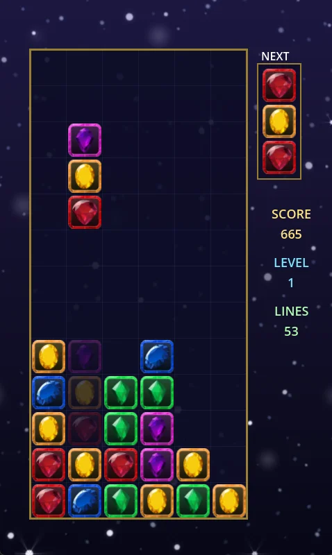
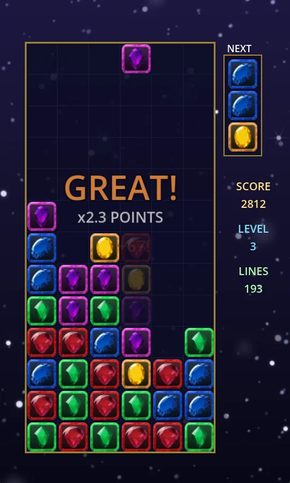

Screenshots


About the game
Columns of three gems drop onto a 6×13 board, one cell at a time. Slide them, rotate the order, and line up three or more of the same colour — horizontally, vertically or diagonally. Everything above the cleared gems falls down, and if that forms new lines the chain keeps going, each step worth more than the last.
Every level‑up sends down a Magic Gem: a single stone cycling through every colour in play. Land it on a gem and every gem of that colour leaves the board at double points. The board only tops out when the spawn column itself is blocked, so a board that looks lost often isn't.
Features
- Classic endless mode with 5–8 colours
- Three‑minute Time Attack with its own leaderboard
- Diagonal matching, not just rows and columns
- Chain combos with on‑screen banners and voice calls
- Magic Gem that clears an entire colour
- Three block themes: gemstones, glass squares, circles
- Sparkles, glass shards and screen shake — all optional
- Local high score tables and lifetime stats
Controls
| ← → | Move the column left / right |
| ↑ | Rotate the gems in the column |
| ↓ | Soft drop |
| Space | Hard drop |
| Escape | Pause |
| F11 | Toggle fullscreen |
Where to get it
Magic Diamond Linker is still in development. The itch.io page goes live first — check back here, or follow along at karolkurek.pl.